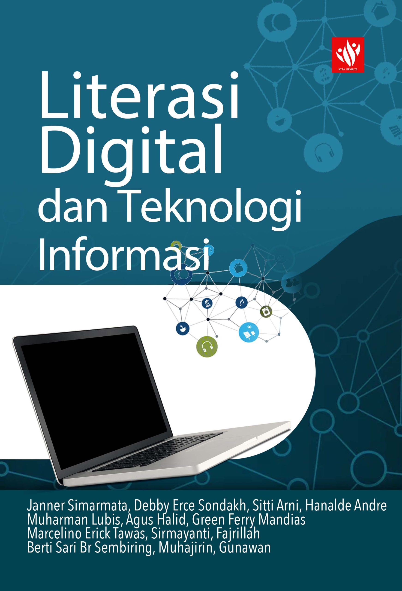
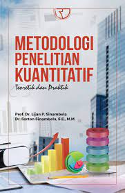

Koleksi Terbaru
Manajemen Pendidikan Islam
Penulis: Dr. Ahmad Yusuf

Teknologi Informasi dan Literasi Digital
Penulis: Siti Rahmawati, M.Kom
Filsafat Dunia Modern (1850-1970)
Penulis: Prof. Budi Santoso
Pengantar Metodologi Penelitian
Penulis: Laila Nuraini, M.Pd

Metodologi Penelitian Kuantitatif
Penulis: Laila Nuraini, M.Pd